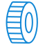

Полуприцепы шторные
01 Технические характеристики
- Общая длина: 13 900 мм
- Длина грузовой платформы: 13 600 мм
- Общая ширина: 2 550 мм
- Ширина грузовой платформы: 2 470 мм
- Высота в свету под крышей: 2 710 мм
- Допустимая нагрузка на седельное устройство: 11 500 мм
- Общая допустимая нагрузка на осевой агрегат: 24 000 кг (на каждую ось по 8 000 кг)
- Технически возможная нагрузка на агрегат: 27 000 кг (на каждую ось по 9 000 кг)
- Допустимый общий вес: 35 000 кг
- Технически возможный общий вес: 38 000 кг
- Собственный вес в базовой комплектации: 6 950 мм
- Межосевое расстояние: 1 310 мм
- Высота седельного устройства: 1 150 мм
02 Преимущества
- Рама шасси - из высокопрочной стали Powerweld/Powerform (Россия). Несущие лонжероны рамы – сварные двутаврового профиля. Все элементы рамы полностью оцинкованы.
- Напольное покрытие шасси - водостойкая ламинированная фанера толщиной 27 мм. В отбортовке рамы отверстия для крепления груза по всей длине рамы.
- Шкворень – производства фирмы OMS два дюйма (2”), сменный, тарельчатого типа.
- Опорное устройство – производства фирмы BPW/JOST, с двухступенчатым редуктором.
- Агрегат трехосный – BPW/JOST/с пневмоподвеской, с допустимой нагрузкой 9 тонн на ось, с односкатной ошиновкой размерности 385/65 R22,5. Тормозные механизмы – дисковые. Балка оси, круглая D = 146 мм, толщиной 10 мм
- Тормозная системаEBS Wabco: двухпроводная, ABS 2S / 2M её отличительной чертой является минимальное количество аппаратов и электронное управление, две задних оси оснащены энергоаккумуляторами.Розетка ABS 7 контактная.
- Колесас бескамерными шинами 385/65 R22,5 рисунок протектора дорожный. Без запасного колеса.
- Боковая защитаиз алюминиевого профиля
- Кронштейн запасного колесадля двух запасных колес
03 Надстройка полуприцепа – шторная платформа со сдвижной конструкцией тента (сдвижная крыша и боковые шторы).
Электрооборудование – Ermax, двухпроводная схема.Разъемы(2 шт – 7 - контактные, 1 шт, 15 - контактный), 8 боковых оранжевых фонаря, 2 задних комбинированных фонаря, 2 фонаря подсветки номера, 2 задних габаритных фонаря «улитка» в эластичном корпусе.
Механизм сдвижной крыши и штор – производства Versus: верхняя часть каркаса тента и боковые стенки имеют сдвижной механизм, для удобства погрузки - выгрузки, т.н. "шторный механизм" с механизмом натяжения тента в задней части.
Сдвижные бортовые стойки – производства Versus: устанавливаются сдвижные стойки, для обеспечения наибольшего пространства для погрузочных работ.
Передняя стенка – алюминиевые наборные профиля, обшита листом фанеры с внутренней стороны.
Тент крыши и боковых штор –ткань из полиэстера, покрытая пастой ПВХ: боковые шторы изготавливаются из тента серебристого цвета плотностью 850-900 г/м2; тент сдвижной крыши изготавливается из светопроникающего материала белого цвета, плотностью 650-680 г/м2. Крепление тента через ремни к обвязке платформы.
Дверной портал – выполнен из оцинкованной стали, на пороге установлены роликовые демпферы обеспечивающие надёжную защиту при подъезде к пандусу.
Двери распашные – HESTAL, двухстворчатые, с углом открывания 270°. Дверное полотно – наборный алюминий. Фурнитура: 4 петли и 2 штанги на дверь (штанги внутри алюминиевого профиля дверей). Фиксаторы дверей в открытом положении - штанговые.